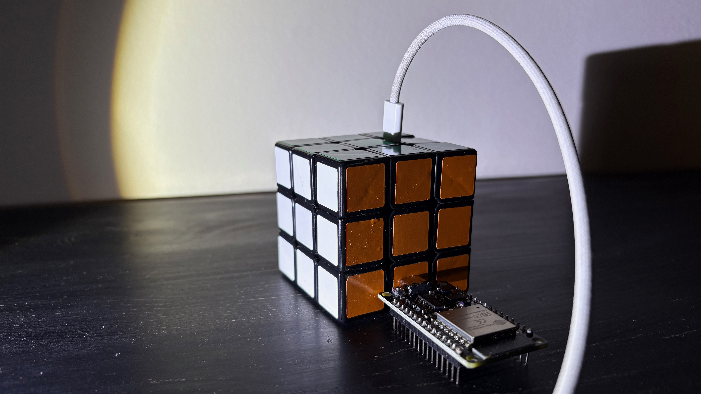
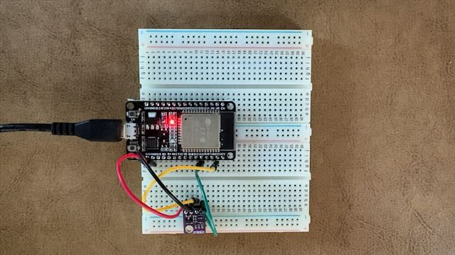
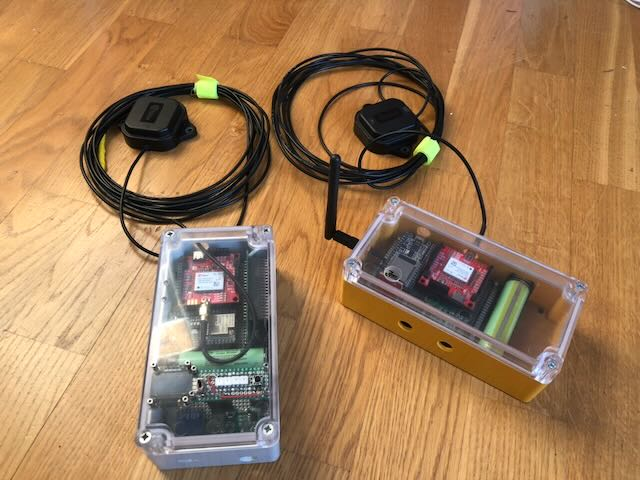

Artifacts, Assets & R&D

00: The Logical Anchor
A "charged" Rubik's cube used as a calibration artifact for spatial logic and mental liveliness. Proof that complex systems are solvable one layer at a time.

01: Atmospheric Precision
Industrial-grade barometric sensing using Bosch BME280/ESP32 architecture. Specialized for niche prosumer and industrial environmental monitoring.

02: cm level precision GNSS
Developing high-precision geospatial assets tailored for forestry and autonomous infrastructure mapping.
The RTK4 Logic
We bridge the gap between complex software logic and high-precision physical hardware. With 20+ years of ICT experience, we build Intellectual Property (IP) designed for licensing in the B2B and B2B2C markets.
Call for action
Seeking strategic licensing partners and innovation collaborators.